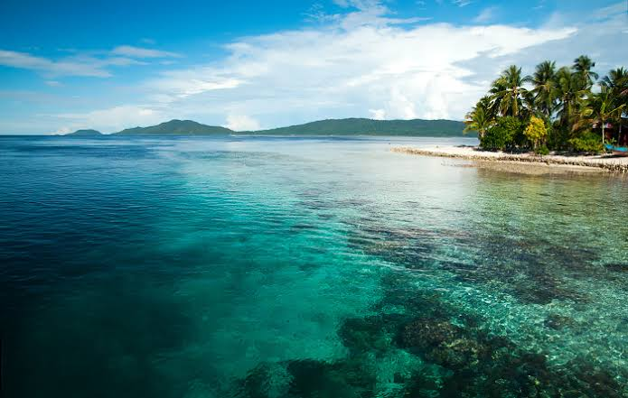
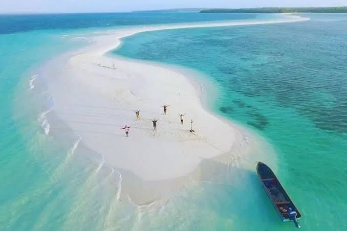
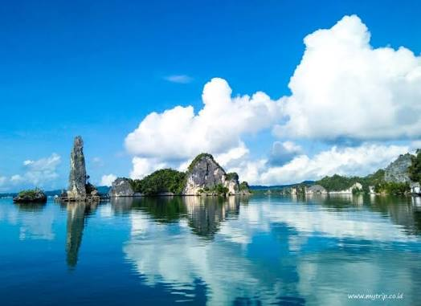
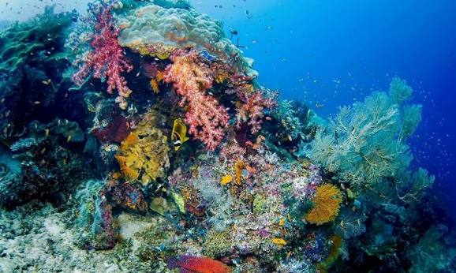
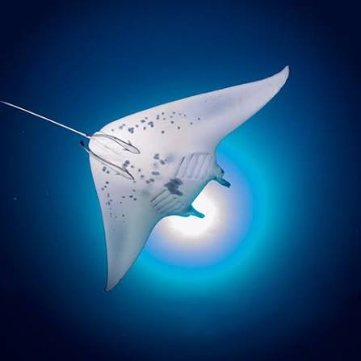
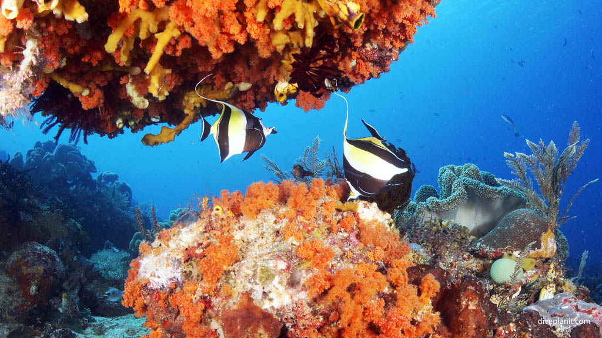
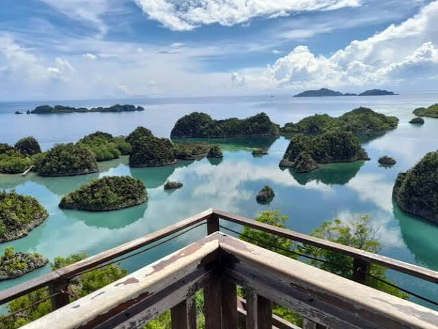
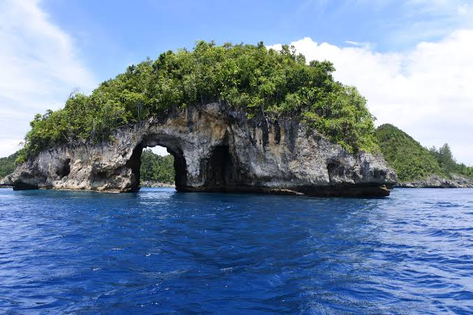
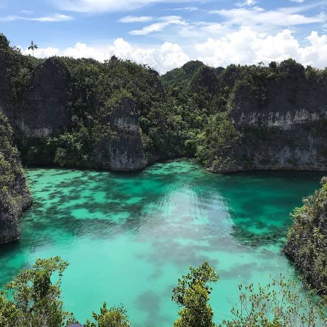

Snorkeling
Nikmati terumbu karang dan ikan warna-warni langsung dari permukaan air yang jernih. Cocok untuk pemula dan keluarga, karena perairannya tenang dan peralatan sudah disediakan.


Pasir Timbul

Teluk Kabui
Diving
Selami titik selam kelas dunia dengan visibilitas jernih dan biota laut yang beragam, termasuk pari manta. Layanan ini ditujukan untuk penyelam bersertifikat dan didampingi pemandu berpengalaman.

Cape Kri

Manta Sandy

Blue Magic
Panorama
Jelajahi gugusan pulau karst dan laguna biru dari titik pandang terbaik. Pas untuk pecinta foto dan petualang yang ingin menikmati pemandangan tanpa harus menyelam.

Piaynemo

Wayag
